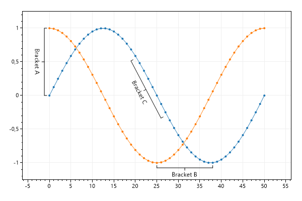
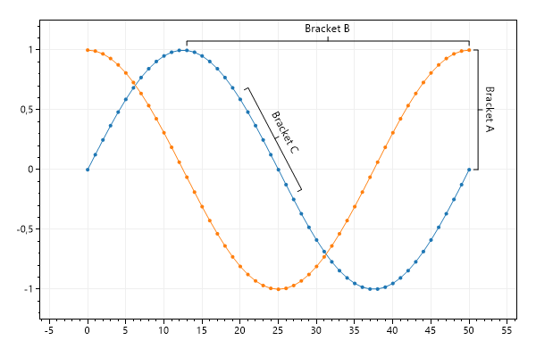
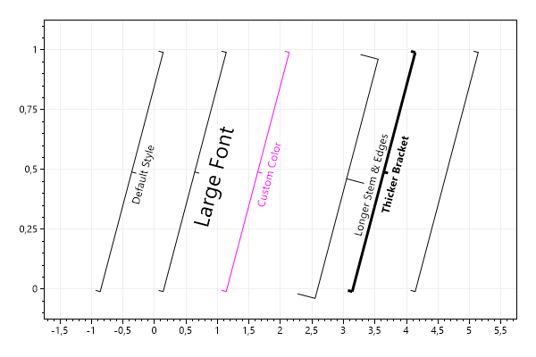

This page contains recipes for the Bracket category.
Visit the Cookbook Home Page to view all cookbook recipes.
Visit the Cookbook Home Page to view all cookbook recipes.
Bracket Annotations
Brackets are useful for annotating a range of data.
var plt = new ScottPlot.Plot(600, 400);
plt.AddSignal(DataGen.Sin(51));
plt.AddSignal(DataGen.Cos(51));
plt.AddBracket(0, 1, 0, 0, "Bracket A");
plt.AddBracket(25, -1, 38, -1, "Bracket B");
plt.AddBracket(20, .55, 27, -.3, "Bracket C");
plt.Margins(.2, .2); // zoom out slightly to make room for labels
plt.SaveFig("bracket_quickstart.png");

Inverted Brackets
By default bracket labels appear clockwise relative to the line formed by their two points. Users can invert the direction of brackets as needed.
var plt = new ScottPlot.Plot(600, 400);
plt.AddSignal(DataGen.Sin(51));
plt.AddSignal(DataGen.Cos(51));
var bracketA = plt.AddBracket(50, 1, 50, 0, "Bracket A");
bracketA.LabelCounterClockwise = true;
var backetB = plt.AddBracket(13, 1, 50, 1, "Bracket B");
backetB.LabelCounterClockwise = true;
var backetC = plt.AddBracket(20, .65, 27, -.20, "Bracket C");
backetC.LabelCounterClockwise = true;
plt.Margins(.2, .2); // zoom out slightly to make room for labels
plt.SaveFig("bracket_invert.png");

Styling Brackets
Brackets have additional options for customizations.
var plt = new ScottPlot.Plot(600, 400);
plt.AddBracket(-1, 0, 0, 1, "Default Style");
var bracketA = plt.AddBracket(0, 0, 1, 1, "Large Font");
bracketA.Font.Size = 24;
var bracketB = plt.AddBracket(1, 0, 2, 1, "Custom Color");
bracketB.Color = Color.Magenta;
var bracketC = plt.AddBracket(2, 0, 3, 1, "Longer Stem & Edges");
bracketC.EdgeLength = 20;
var bracketD = plt.AddBracket(3, 0, 4, 1, "Thicker Bracket");
bracketD.LineWidth = 3;
bracketD.Font.Bold = true;
plt.AddBracket(4, 0, 5, 1, label: null);
plt.Margins(.2, .2); // zoom out slightly to make room for labels
plt.SaveFig("bracket_style.png");
